PITCHKEEP
Premier League ranks
The X
The X
Memes from X.
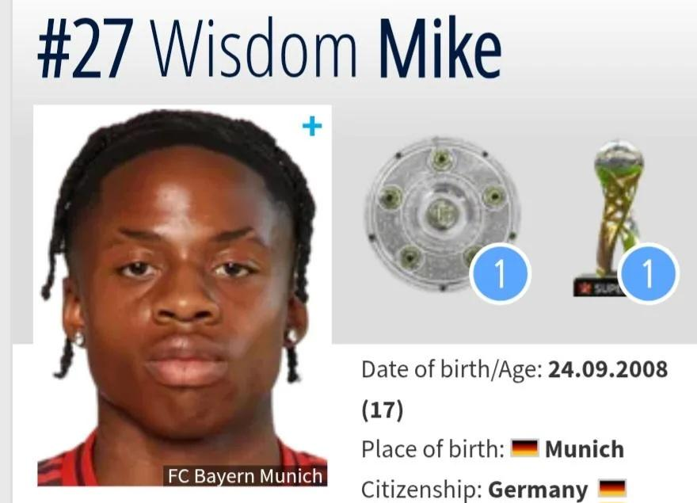
RedditTOP 10 PLAYER NAMES THAT WOULD TOTALLY WORK AS RAPPER ALIAS
submitted by /u/LowRenzoFreshkobar [link] [comments]
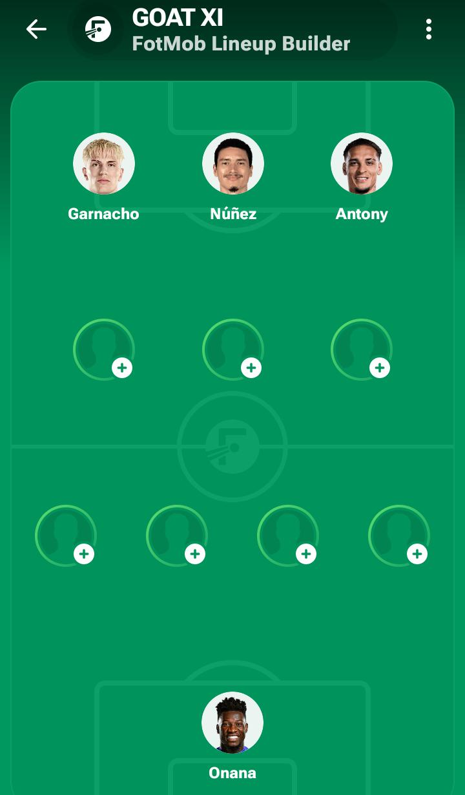
RedditPlease help me finish the Goat XI so my soul can RIP
submitted by /u/OtherwiseLuck888 [link] [comments]
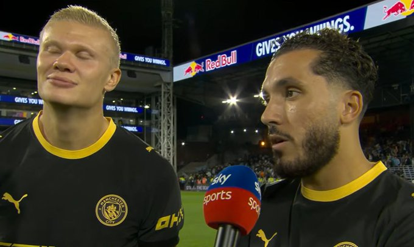
RedditRayan Cherki: "Today I didn't give much balls to Erling, but the next time I want to give him lots of balls."
submitted by /u/XimplusGG [link] [comments]
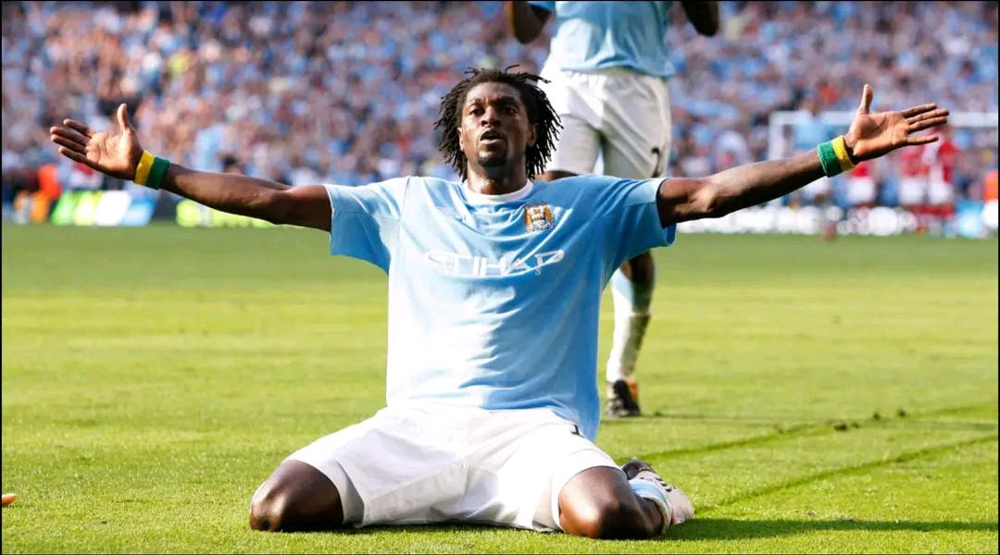
RedditEnzo Fernandes when he scores for Man City against Chelsea.
submitted by /u/_nakusho [link] [comments]
RedditDamn, is this the most jerkable photo of the year so far?
submitted by /u/Oupav0s [link] [comments]
RedditFerguson doesn't get enought credit for managing some of the weirdest characters in football
submitted by /u/Ummagumma- [link] [comments]
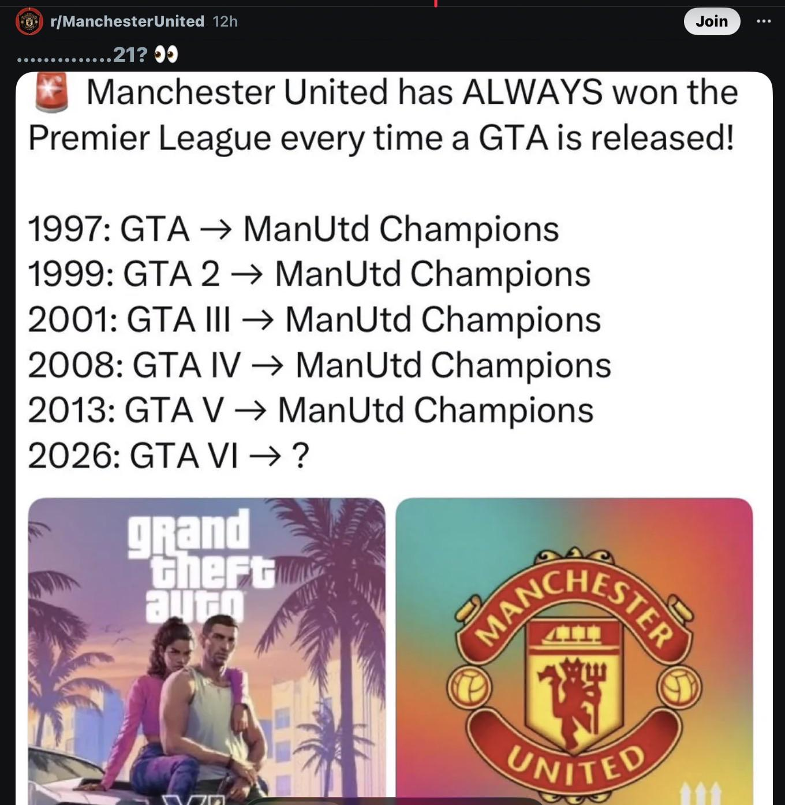
RedditWhatever helps them sleep
submitted by /u/Immediate-Stable-651 [link] [comments]
RedditOfficial Betis Instagram account posted this reaction to CL draw
submitted by /u/Mysterious_Crab_5633 [link] [comments]
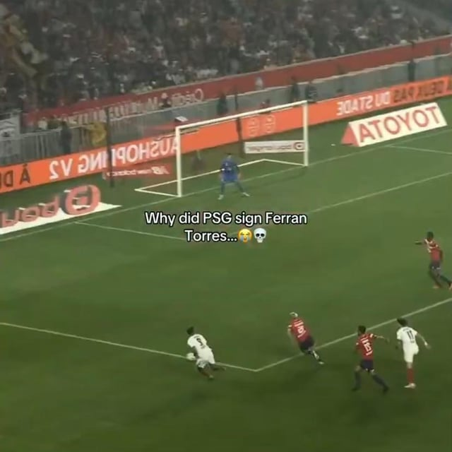
RedditFerran Torres is SO BACK 🔥
submitted by /u/cottoncandyisgood_3 [link] [comments]
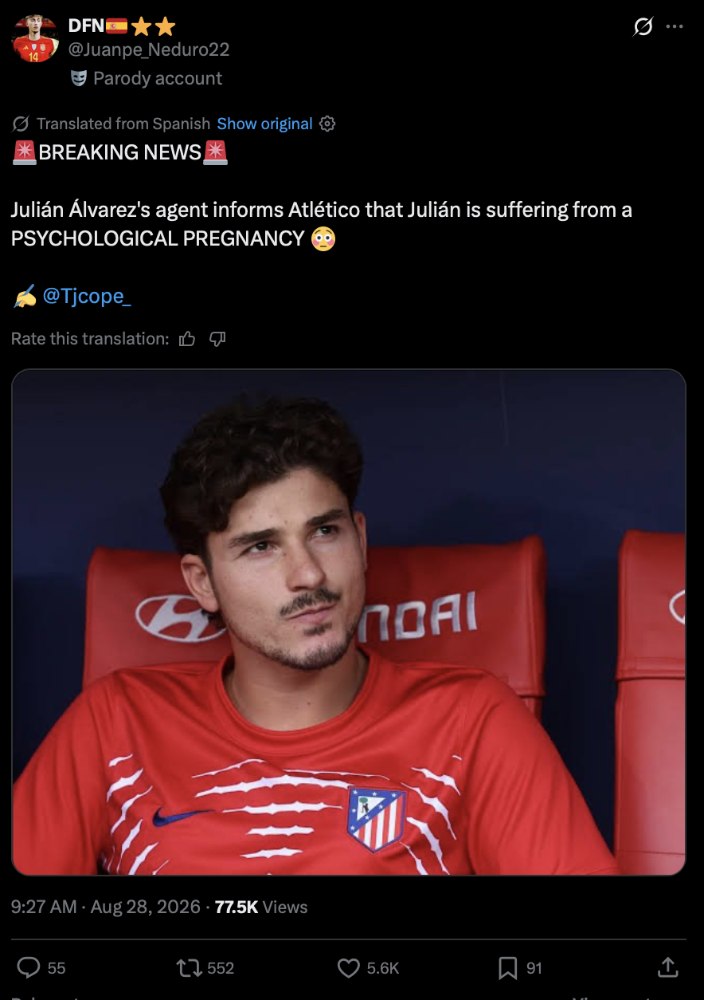
Reddit🚨BREAKING: Julian Alvarez has announced he is psychologically PREGNANT. Rumors about the identity of the father circulate in Spain, the main candidates being Simeone and Laporta 🫃🏻
submitted by /u/Marksman1977 [link] [comments]
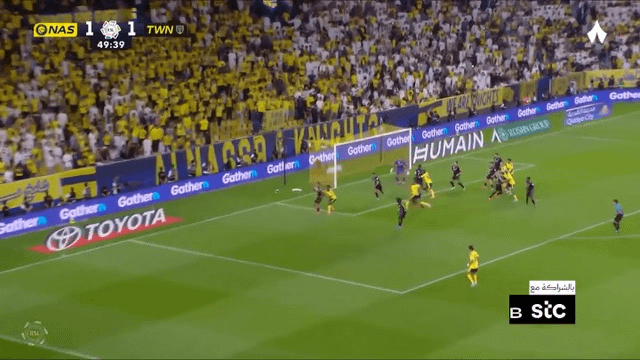
RedditFuck the haters! What a banger of a goal from the 🐫!
Al-Nassr foreva! submitted by /u/KrappaFrappa [link] [comments]
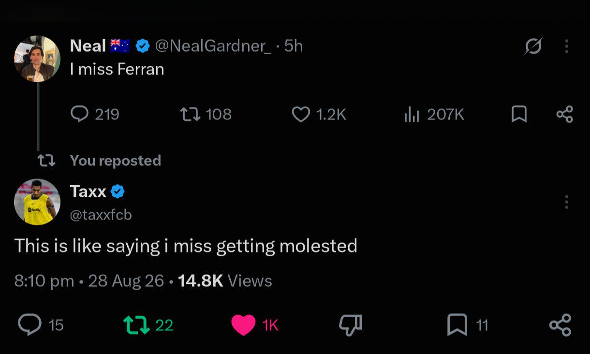
RedditOh my ...
submitted by /u/IndicationBrief5950 [link] [comments]
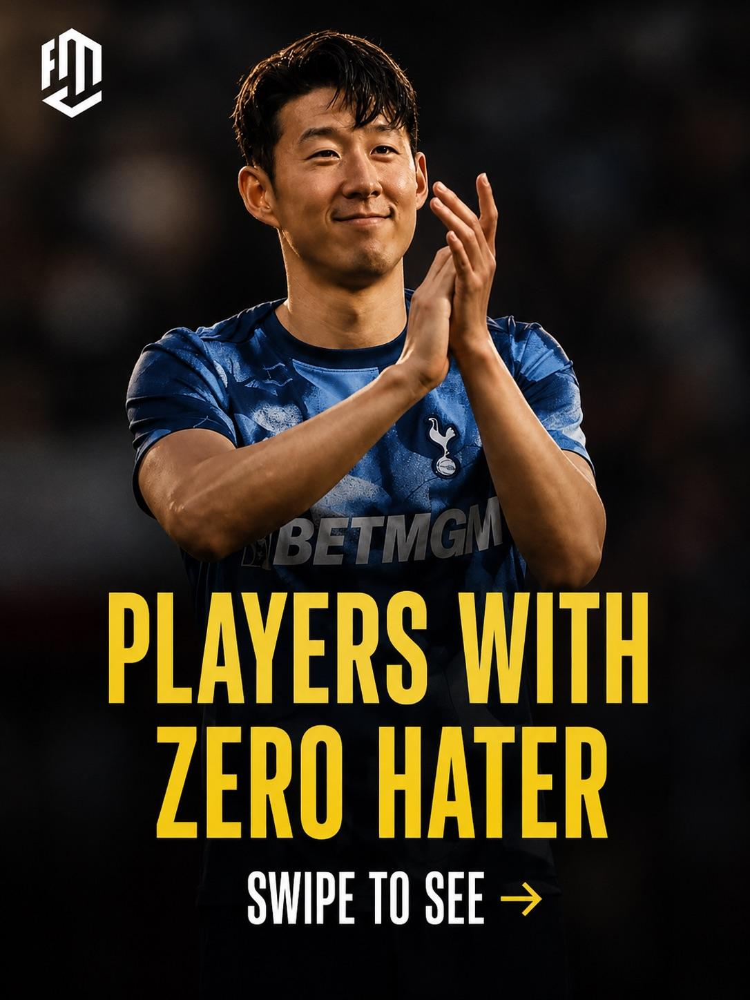
RedditBased on the latest The Athletic rankings
submitted by /u/glascowcomascale [link] [comments]
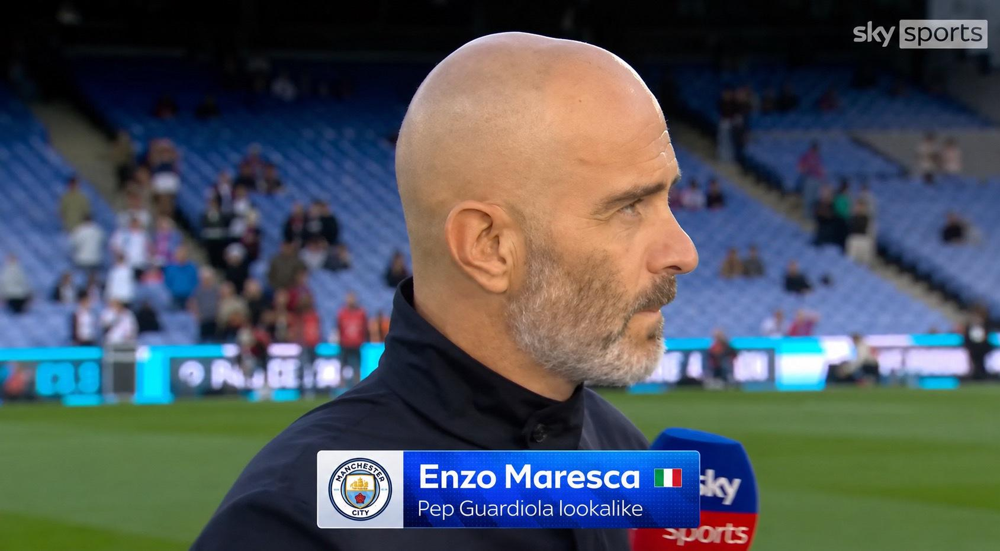
RedditOutjerked by skysports
submitted by /u/nilesmrole [link] [comments]
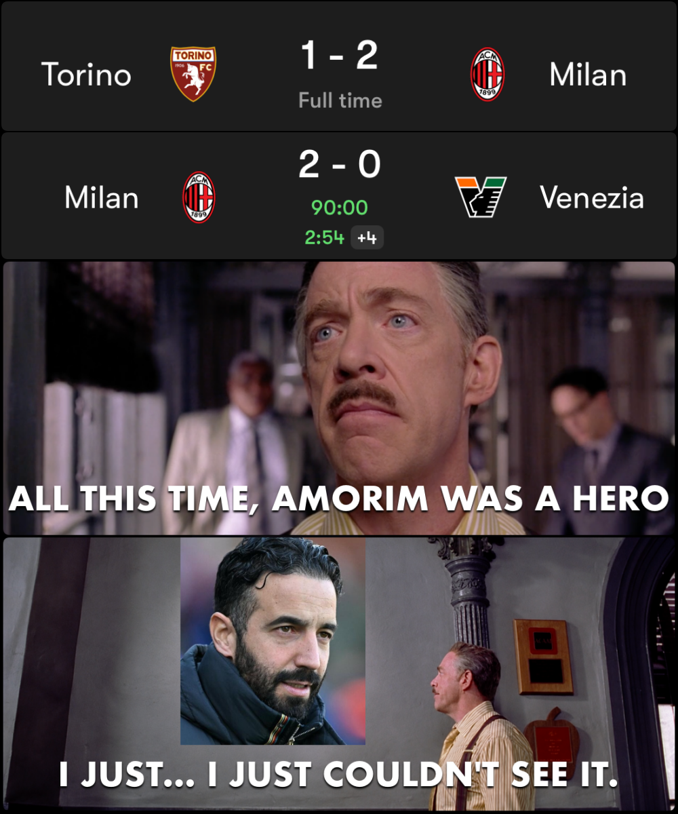
RedditPerhaps I treated you too harshly
submitted by /u/Ummagumma- [link] [comments]
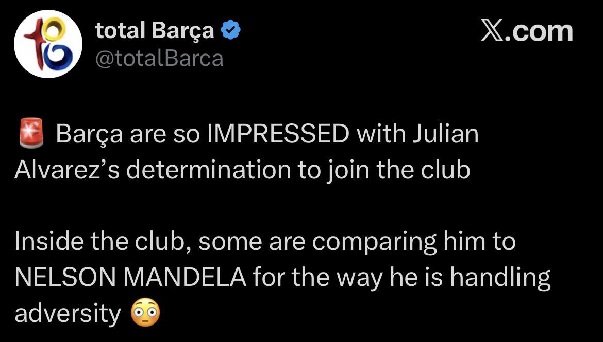
RedditWhat is Barca even about anymore
submitted by /u/NoSpirit7057 [link] [comments]
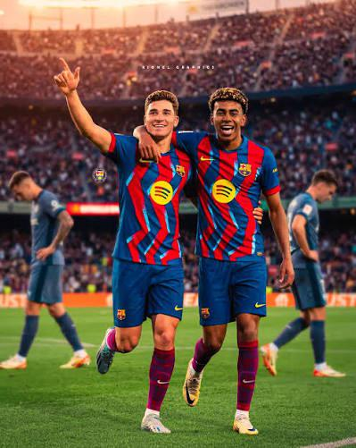
RedditReports suggest Lamine sent this picture to Alvarez. Alvarez saw the picture and immediately started crying, he went into the Atletico dressing room and smashed everything. The dam
submitted by /u/jumpmanpapi23 [link] [comments]
RedditOlise vs Luke Shaw at Old Trafford - this is the kind of battle that can turn Manchester United vs Bayern Munich into absolute chaos.
submitted by /u/Several_Sandwich_732 [link] [comments]
RedditCholo Simeone when Alvarez shows him his depression medical report
submitted by /u/FM_highlights [link] [comments]
Redditkid screamed at the top of his lungs... Forza Milan in one of Naples' restaurants
submitted by /u/rickkyyyyyyyyy [link] [comments]
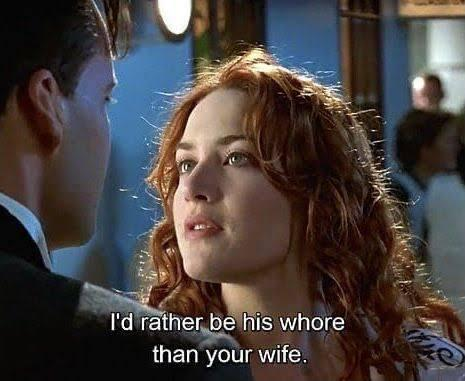
RedditAlvarez whenever Athletico tried to persuade him against Barcelona
submitted by /u/papachi789 [link] [comments]
Reddit"Hello Julian, this is Mikel Ar-"
submitted by /u/PhilosophicalNeo [link] [comments]
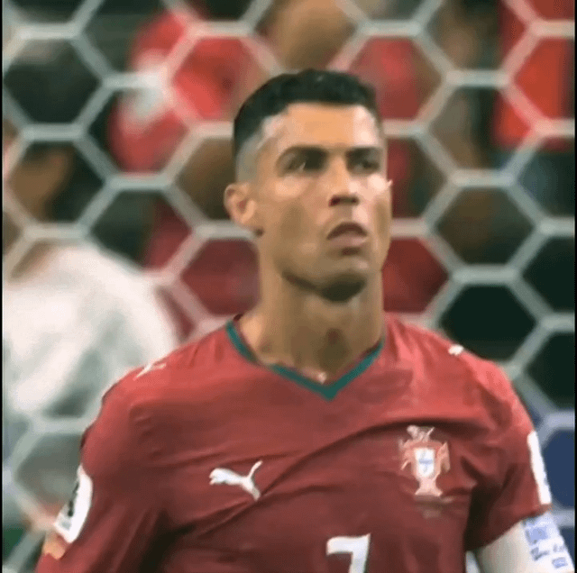
RedditWhen my Lucia breaks up with me after my 207th visit to strip club with 0% story progress
submitted by /u/Chinese_Haka_Noodles [link] [comments]
 Reddit
RedditMan City to bid for Chelsea's £120m-rated Enzo Fernandez
submitted by /u/tylerthe-theatre [link] [comments]
 Reddit
RedditSpider-Man: No Way to Barca
submitted by /u/cottoncandyisgood_3 [link] [comments]
 Reddit
RedditAston Villa goalkeeper Emi Martinez offered to Chelsea
Aston Villa goalkeeper Emiliano Martinez has been offered by his representatives to Chelsea and the Stamford Bridge club are considering the
 Reddit
RedditOutjerked by Cristiano himself
submitted by /u/Fun-Ad3626 [link] [comments]
 Reddit
RedditUnc aint leaving cucurella alone
submitted by /u/AccomplishedWatch834 [link] [comments]
 Reddit
RedditWalk a mile in my shoes…
submitted by /u/Soft-Replacement-397 [link] [comments]
 Reddit
RedditImages AI could never recreate
submitted by /u/Unfair-Gur7325 [link] [comments]
 Reddit
RedditAyyoub Bouaddi transfer: Manchester City complete record-breaking £86m deal to sign 18-year-old Morocco midfielder | Football News
submitted by /u/dreigilb [link] [comments]
 Reddit
RedditMan City to bid for Chelsea's £120m-rated Enzo Fernandez
submitted by /u/dreigilb [link] [comments]
 Reddit
RedditRaheem Sterling charged with dangerous driving after crash on M3 in Hampshire
submitted by /u/tylerthe-theatre [link] [comments]
 Reddit
RedditEvery hotel room has a chair for Arteta
submitted by /u/Lonely-Canary-5610 [link] [comments]
 Reddit
RedditJulian not well for next matchday😵💫
submitted by /u/sanchzzzzzzzzzz [link] [comments]
 Reddit
Redditresting sad face 🐐
submitted by /u/FM_highlights [link] [comments]